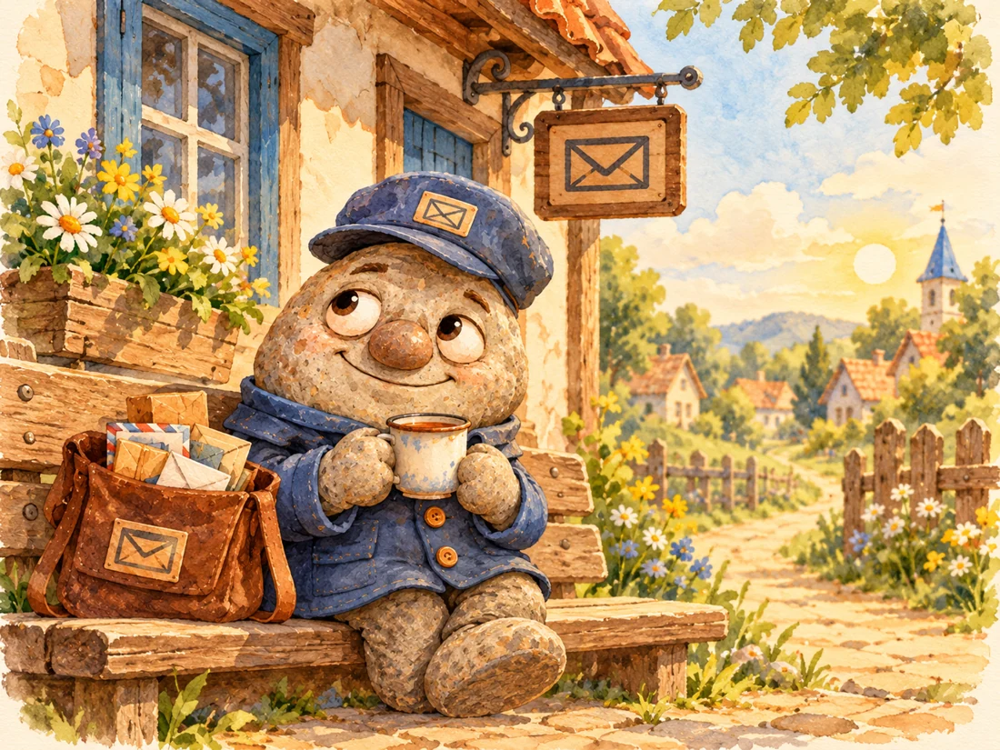
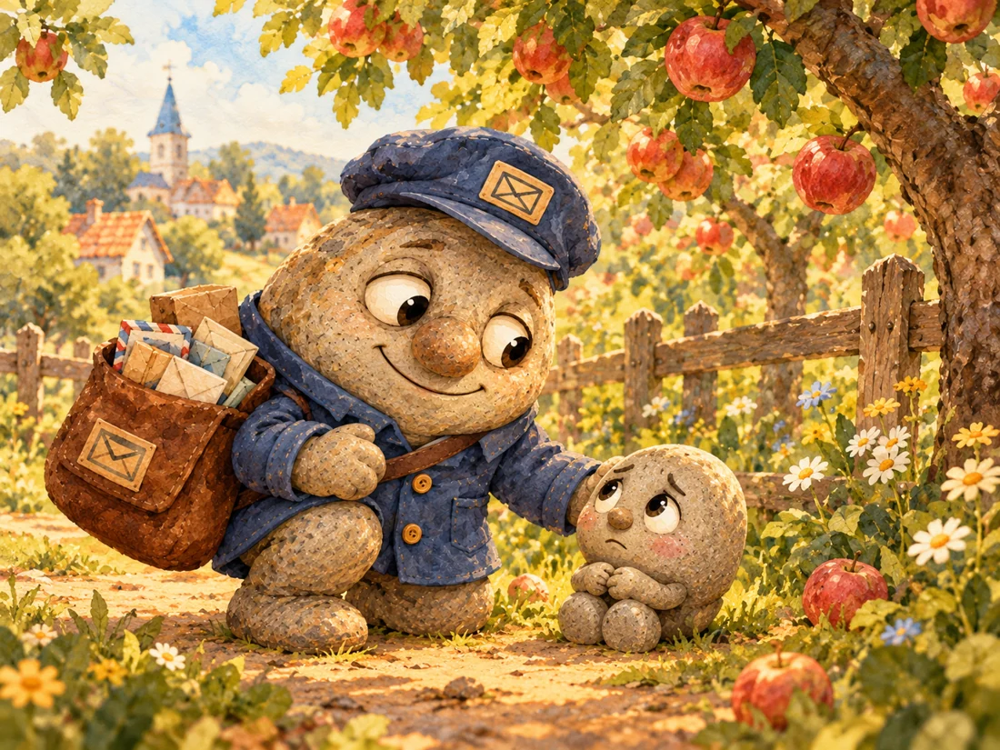
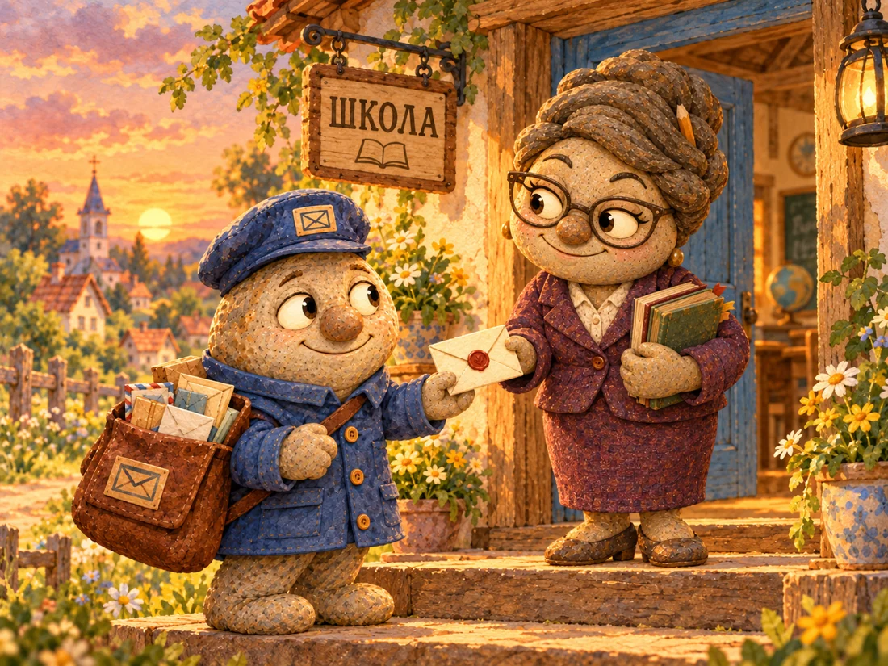
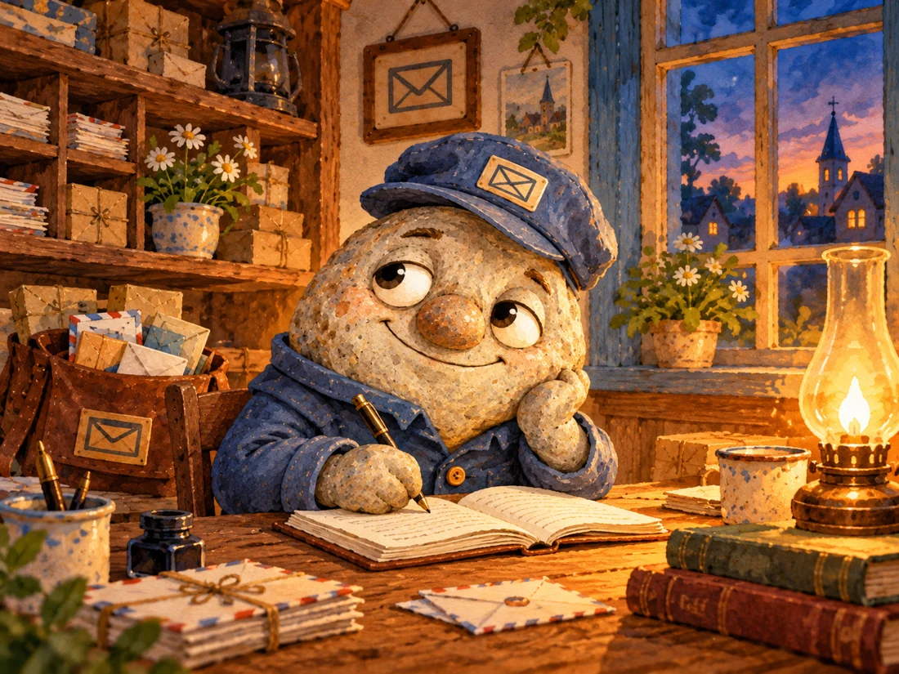

Утром в Галькино можно было узнать многое, даже не выходя на площадь. От пекарни Марфы Крошкиной тянуло горячим хлебом, со стороны мельницы доносился мерный стук колеса, а возле почтового отделения непременно поскрипывала скамейка. На ней обычно сидел Тимофей Булыжников, смотрел на облака и пил чай из кружки с отколотой ручкой.

Тимофей был деревенским почтальоном. Он носил синюю фуражку со значком-конвертом и широкую сумку, в которой всегда находилось что-нибудь нужное: письма, открытки, забытая кем-то записка, запасной карандаш и пара сухариков на случай долгой дороги. Каждое письмо он укладывал осторожно, будто это была чья-то маленькая тайна. А когда вручал его адресату, обязательно интересовался, как дела, как здоровье и не требуется ли чего помочь.
Беда заключалась в том, что между разговором и следующим делом Тимофею требовалось время. Он вовсе не хотел никого подводить. Иногда соседям, конечно, приходилось ждать его дольше, чем следовало, и Тимофей это понимал. Просто ему постоянно казалось, что начинать лучше завтра — когда будет посвободнее, потише и настроение окажется подходящим.
Один такой завтрашний день тянулся уже три года. Всё это время Тимофей обещал сходить за новой почтой в отделение у дальней дороги. В Галькино письма попадали и другими путями: соседи передавали друг другу записки, путники привозили открытки, а важные конверты иногда оставляли у старосты. Но поход за новой почтой оставался главным пунктом в записной книжке Тимофея. Он даже подчеркнул его дважды и приписал: «Обязательно с понедельника».
В той же книжке хранился ещё один план — начать новую жизнь с понедельника: вставать пораньше, всё делать вовремя и никуда не опаздывать. Тимофей относился к этой мечте совершенно серьёзно. Он даже выбрал для неё красивый чистый разворот, но так и не решился поставить возле первого пункта галочку.
Каждый понедельник Тимофей раскрывал книжку, внимательно читал строчку про новую почту и находил убедительную причину сначала заняться чем-нибудь попроще. Иногда это была починка ремня сумки, иногда — уборка стола. А порой он просто садился на крыльцо, чтобы как следует обдумать предстоящую дорогу. Так незаметно наступал вечер.
В один тёплый день, когда над крышами ещё держался утренний туман, в почтовое отделение вошёл староста Савелий Уступкин. Он опирался на трость и нёс плотный конверт с красной печатью.
— Курьер из соседней деревни оставил его на рассвете, — объяснил Савелий. — Для Анфисы Мироновой. Просили передать сегодня, до заката.
Тимофей повертел конверт. На лицевой стороне аккуратными буквами было написано: «Срочно. Для школьных приготовлений».
— До заката времени достаточно, — заметил он.
— Достаточно, если начать сейчас, — мягко ответил староста.
Тимофей кивнул. Спорить с Савелием не хотелось: тот редко повышал голос, но всегда умел выделить главное. Почтальон положил конверт в отдельный карман сумки, чтобы не помять печать, и решил отправиться после чая.
Чай затянулся ненадолго. Зато на выходе Тимофей заметил, что у Марфы разошлась петля на калитке, и помог её закрепить. Марфа, которая терпеть не могла ничего перекошенного, заметно повеселела и угостила его тёплой булочкой, а заодно попросила по дороге передать привет Анфисе. Потом Тимофей задержался у колодца: соседка искала упавшую в траву крышку от ведра. Только после обеда он наконец вышел на дорогу к школе. Он не считал это потерянным временем — ведь кому-то успел помочь. И всё же, глянув на солнце, впервые за день прибавил шаг.
У старой ивы дорога расходилась надвое. Одна тропинка вела прямо к школе, другая огибала яблоневый сад. Там, у низкого плетня, Тимофей услышал тихие всхлипывания.
На камне сидел маленький серый камешек с пучком сухой травы в руке. Он старательно вытирал глаза, но от этого только сильнее размазывал пыль по щекам.

— Что случилось, дружок? — спросил Тимофей и присел рядом.
— Я пошёл за бабочкой, — признался камешек. — Она была жёлтая. А потом исчезла. И дом тоже исчез.
Тимофей оглянулся. Дом, конечно, никуда не исчез, но с этого места за густыми кустами действительно ничего не было видно.
— А возле твоего дома что растёт?
— Большая вишня. И ещё там ступенька кривая. Мама всё говорит, что её нужно поправить.
Почтальон улыбнулся. Он хорошо знал деревенские дорожки и вспомнил маленький дом за пекарней, где возле калитки росла старая вишня.
— Кажется, я знаю, куда тебя отвести. Пойдём вместе.
Камешек крепко взял его за рукав. Они шли небыстро: приходилось обходить лужи, перелезать через корни и останавливаться, когда малыш начинал тревожно оглядываться. Тимофей рассказывал ему, как однажды сам перепутал две одинаковые тропинки и вместо почты оказался у мельницы. Малыш сперва слушал молча, потом робко засмеялся.
У дома с кривой ступенькой их встретила встревоженная мама. Она уже собиралась бежать за помощью и так обрадовалась, что сразу обняла маленького беглеца. Тимофей подождал, пока тот перестанет всхлипывать, пожелал им доброго дня и только тогда вспомнил о конверте.
Солнце опустилось ниже крыш.
Обычно в такой час Тимофей сказал бы, что поздновато начинать серьёзное дело. Но теперь он представил, как Анфиса ждёт известий для школы, и ему стало неловко от мысли, что кто-то весь день смотрит на дорогу и надеется увидеть синюю фуражку.
Он поправил ремень сумки и свернул на короткую тропу между садами. Шёл так быстро, как позволяли его короткие каменные ноги. Даже у пекарни не остановился, хотя свежие булочки пахли особенно заманчиво.
Когда Тимофей подошёл к школе, вечернее солнце уже золотило окна. Анфиса Миронова стояла на крыльце с пачкой детских рисунков: она собиралась отвезти их на выставку, если участие подтвердится. Увидев почтальона, она облегчённо выдохнула.

— Тимофей! Я уж решила, что письмо придёт завтра.
— Сам так думал, — признался он. — Но решил попробовать сегодня.
Анфиса развернула конверт и пробежала глазами письмо. Из соседней деревни приглашали учеников Галькино на завтрашний праздник рассказчиков. Там же собирались устроить выставку детских рисунков. Организаторы просили подтвердить участие до вечера, чтобы успеть приготовить для детей места и материалы. Рядом с подписью стояла приписка: «Ответ можно передать с возвращающимся курьером».
— Вот почему срочно, — сказала Анфиса. — Курьер ещё ждёт моего ответа у старосты. Если бы письмо пришло завтра утром, наши дети остались бы дома.
— Но праздник ведь только завтра, — заметил Тимофей.
— Именно! — Анфиса подняла палец. — Чтобы что-то случилось завтра, иногда нужно постараться сегодня.
Она сказала это с таким видом, будто давно готовилась к спору. Тимофей не стал возражать. После долгой дороги у него не осталось ни одного убедительного довода против.
Пока учительница писала ответ, он помог перевязать детские рисунки лентой, чтобы утром ничего не потерялось. Потом сам отнёс записку старосте: обратная дорога к почте всё равно проходила через площадь. Савелий прочитал ответ, посмотрел на почтальона и одобрительно кивнул. Ни удивляться, ни хвалить слишком громко он не стал.
К вечеру Тимофей вернулся в почтовое отделение. Он устал, фуражка съехала набок, а в сумке почти не осталось писем. Зато потерявшийся малыш был дома, и школьники не пропустят праздник. Тимофей поставил чайник и открыл записную книжку.
На первой странице по-прежнему красовалась старая запись: «Сходить за новой почтой. Обязательно с понедельника».
Он подумал о том, как приятно было увидеть улыбку Анфисы и услышать смех малыша. Получалось, что дела, за которые он так не любил браться, иногда приносили куда больше радости, чем ожидалось.
Тимофей взял карандаш и рядом с прежней записью вывел новую: «Если кто-то ждёт — лучше не откладывать».

Посмотрел на обе строчки и остался доволен. А потом аккуратно закрыл книжку. До понедельника ведь ещё было несколько дней.
Наутро Марфа встретила его возле почты.
— Тимофей, а за новой почтой когда пойдёшь?
Он поправил фуражку, задумчиво поглядел на дорогу и улыбнулся:
— Завтра, Марфа. Завтра обязательно.
Но когда из-за угла раздалось: «Тимофей, помоги!», он даже не спросил, нельзя ли подождать до утра. Просто поставил кружку на скамейку и пошёл на голос.
В Почтовом архиве Галькино об этом дне оставили короткую запись:
«Тимофей Булыжников доставил срочное письмо до заката и помог найти дорогу домой маленькому жителю. За новой почтой пока не сходил».
Последнюю фразу Тимофей попросил не подчёркивать. Он собирался исправить положение завтра.